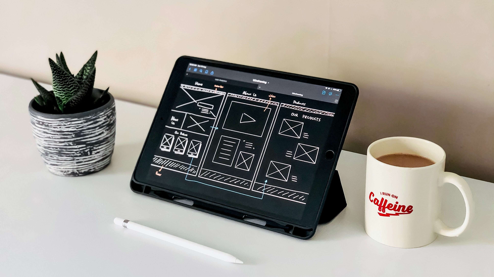

Software Development
With my programming skills to design, develop, and maintain software applications tailored to specific client needs. This can include web applications, mobile apps, desktop software, or custom solutions.

Create visually appealing and user-friendly websites using HTML, CSS, JavaScript, and other web development technologies. Offer services such as website layout design, responsive design, and website optimization.
With my programming skills to design, develop, and maintain software applications tailored to specific client needs. This can include web applications, mobile apps, desktop software, or custom solutions.
Understanding of database systems to design and maintain efficient data storage solutions. Offer services such as database design, optimization, data migration, and data security implementation.